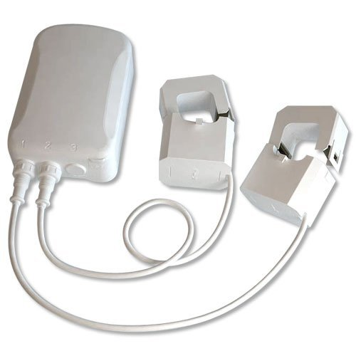
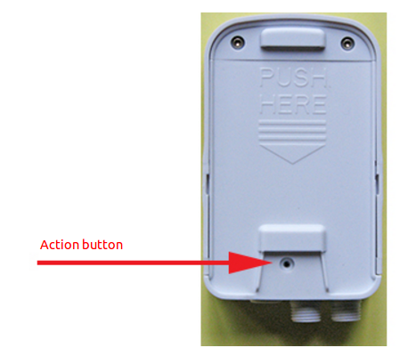
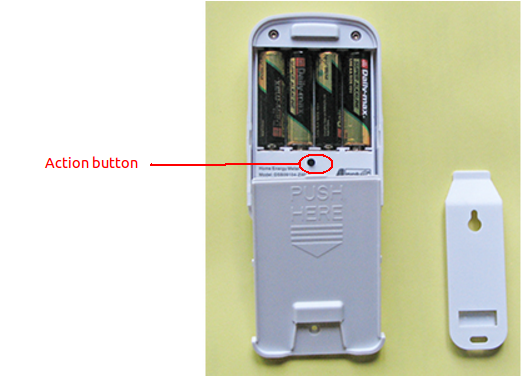

Aeon Labs AEDSB09104ZWUS Aeotec Z-Wave Smart Energy Monitor Meter¶

Brief information¶
- Low-cost energy monitor for the entire home
- Wirelessly reports immediate wattage and kWh usage to central control point gateways
- Can be easily and safely installed by anyone
How to add to VENUS app¶
 
- Newly add to VENUS network
- Press “Add button” (button ‘+’) in app
- Power-up the device
- Press Action button
- Wait for VENUS scan & detect this device and inform in app
- Reset before adding
- Press “Add button” (button ‘+’) in app
- Press Action button (to reset device)
- Press Action button once more (to add)
- Wait for VENUS scan & detect this device and inform in app
How to add/remove associated device(s) to¶
This device support 1 association group with max 5 nodes.
- Add z-wave notified-devices (which will be associated to this sensor) to VENUS
- Select Associate button and then select notified-device(s) to add
- Press Action button to wake-up device (in case of battery usage)
- If successful, pop-up notification displays in VENUS app
To remove associated device(s) from this sensor, below action is required:
- Select Associate button and then select notified-device(s) to remove
- Press Action button to wake-up device (in case of battery usage)
- If successful, pop-up notification displays in VENUS app
Configuration description¶
- Energy detection
This parameter is used to configure the energy detection mode
Available 0: report Wattage and the absolute KWH value 1: report positive/negative Wattage and the algebraic sum KWH value 2: report positive/negative Wattage and the positive KWH value (consuming electricity) 3: report positive/negative Wattage and the negative KWH value (generating electricity) Default 0
- Enable auto report
Enable selective reporting only when power change reaches a certain threshold or percentage
Available 0: disable 1: enable Default 1
- Threshold in Watt to trigger report
Threshold change in wattage to induce a automatic report in whole clamps
Available 0 ~ 60000 Default 50
- Threshold in Watt to trigger report
Threshold change in wattage to induce a automatic report in clamp 1 or clamp 2
Available 0 ~ 60000 Default 50
- Threshold in percentage to trigger report
Threshold change in wattage to induce a automatic report in whole clamps
Available 0 ~ 100 Default 10
- Threshold in percentage to trigger report
Threshold change in wattage to induce a automatic report in clamp 1 or clamp 2
Available 0 ~ 100 Default 10
Factory reset¶
- Press and hold the Action Button for 10 seconds.
- If successful, the LED on the HEM should begin to blink slowly